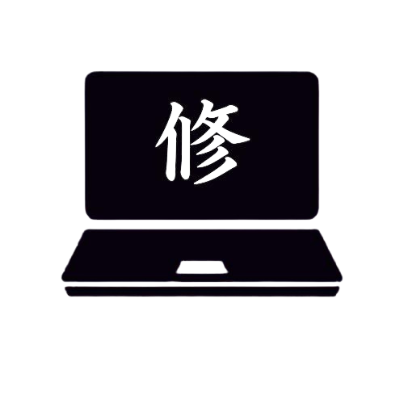
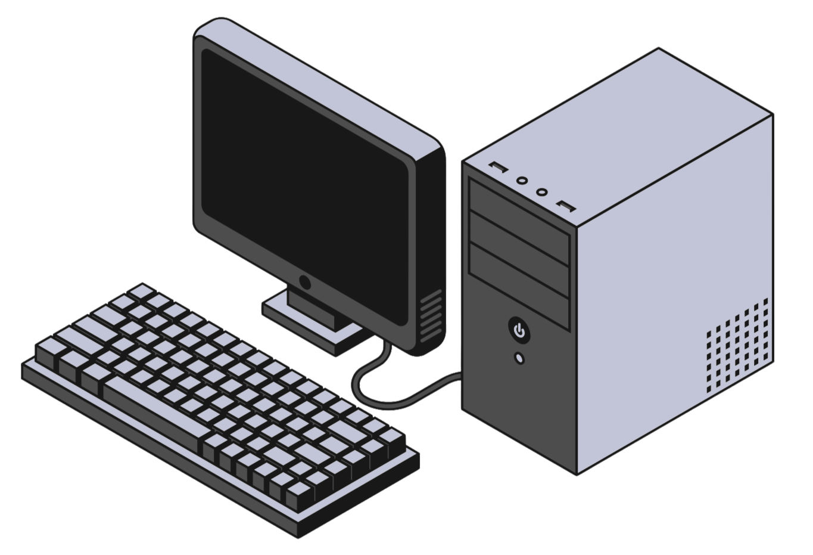

Taisho
Tech Desk
Site de chamados da Taisho Tech voltado ao foco organizacional e profissional, visando sempre tornar o nosso ambiente de trabalho um local mais limpo e eficiente para entrega dos consertos oferecidos pela nossa equipe. Esta plataforma foi desenhada para eliminar ruídos e potencializar nosso talento, garantindo que o fluxo de manutenção seja impecável do início ao fim. Clique no botão abaixo e comece a utilizar!
